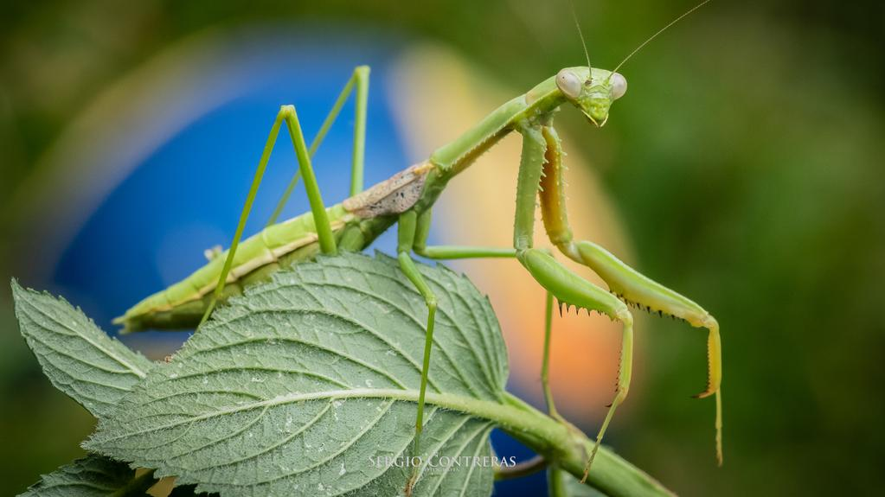
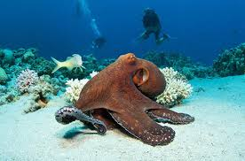
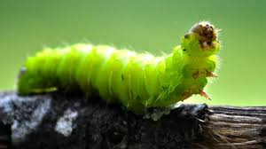
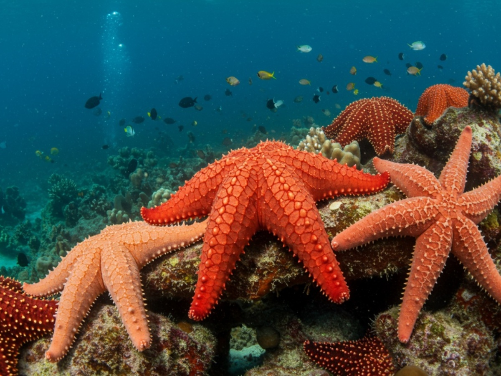
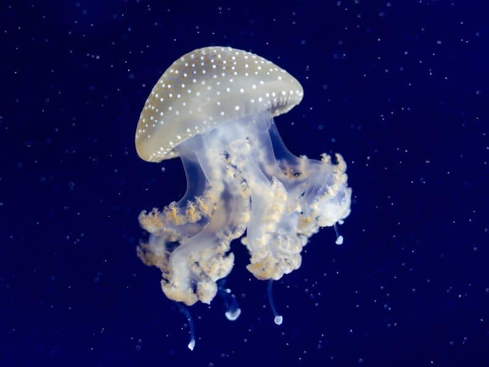
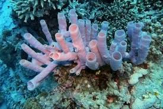

Artrópodos
Animales con exoesqueleto y patas articuladas. Incluyen insectos, arañas y crustáceos.
Los invertebrados son animales que no poseen columna vertebral ni esqueleto interno. Descubre sus principales grupos y características.

Animales con exoesqueleto y patas articuladas. Incluyen insectos, arañas y crustáceos.

Animales con cuerpo blando y a menudo con concha. Incluyen caracoles, pulpos y calamares.

Animales sin patas y con cuerpo alargado. Incluyen gusanos de tierra y de agua.

Animales marinos con cuerpos simétricos y sistema vascular. Incluyen estrellas de mar y erizos de mar.

Animales marinos con cuerpo gelatinoso y tentáculos con células urticantes. Incluyen medusas, anémones y corales.

Animales marinos sencillos con cuerpos porosos. Incluyen diversas especies marinas.
Los invertebrados son generalmente animales de cuerpo blando que carecen de un esqueleto interno rígido para la inserción de los músculos , pero a menudo poseen un esqueleto externo duro